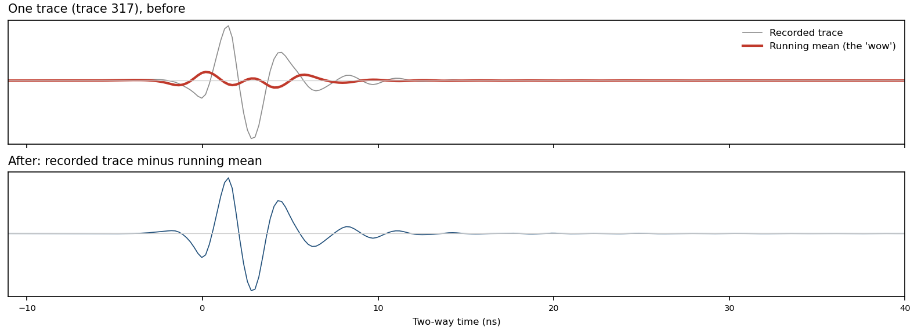
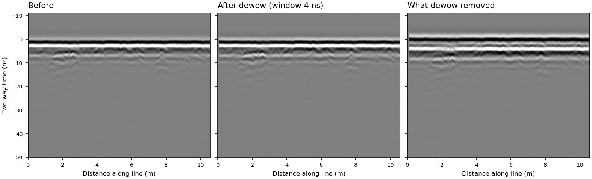
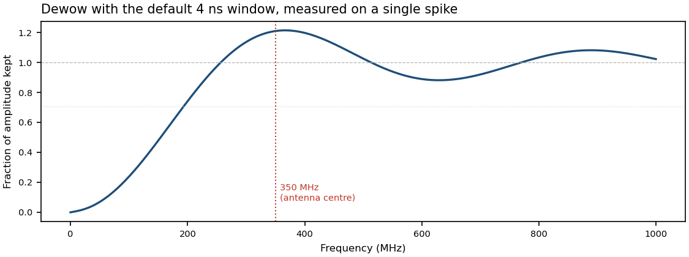

Dewow
In plain wordsA slow drift, taken away
Each time the radar sends a pulse into the ground, it records how the signal coming back changes over a tiny slice of time. Sometimes that recording also has a slow, gentle drift in it that has nothing to do with what is buried. The drift is called “wow.” It makes the whole recording rise and fall slowly, the way a boat bobs on a long, slow wave while small ripples pass across it. Dewow finds that slow drift and subtracts it, so what is left is the quicker wiggles that come from things underground. It does this by looking at a short stretch of time around each moment, working out the average there, and taking that average away.
PicturesWhat it does to a line


The methodA running mean, subtracted
In GPR, wow is a low-frequency signal that decays slowly down each trace. It is usually explained as the receiver electronics being swamped by the strong early arrivals (the air and ground waves) and then slowly recovering, or as inductive coupling between the antenna and the ground. Many systems filter some of it out while recording, and how much is left over depends on the instrument and its settings.
The standard fix is to estimate the slow part of each trace with a moving average (also called a running mean or boxcar filter) and subtract it. For a trace x(t) and a window of length W:
A running mean is a low-pass filter: it keeps slow changes and smooths away fast ones. Subtracting it from the original therefore makes a high-pass filter, which takes away slow changes and keeps fast ones. In frequency terms, the fraction of each frequency f that survives is
where sinc is the frequency response of a boxcar. Other programs sometimes estimate the slow part with a running median or a smooth curve fitted to each trace instead. nsgeo uses the running mean.

SettingsWhat you can change
Window ns · default 4
How long a stretch of time is averaged at each point. A longer window gives a smoother average that follows only the slowest changes, so less is removed. A shorter window lets the average follow quicker changes, so more is removed, including more of the radar pulse. The window has to be at least one sample long (0.217 ns on the campus line) or the step will not run.
| Window | Samples used (campus line) | More than half the power removed below | Strongest boost (≈ +21%) near |
|---|---|---|---|
| 2 ns | 9 (1.95 ns) | ≈ 390 MHz | ≈ 740 MHz |
| 4 ns (default) | 18 (3.90 ns) | ≈ 190 MHz | ≈ 370 MHz |
| 8 ns | 37 (8.01 ns) | ≈ 95 MHz | ≈ 180 MHz |
Both columns scale with the window: the half-power point is about 0.75 / W and the boost peaks near 1.43 / W.
Things to knowSide effects
- It can't tell wow from slow parts of real signal. Anything slower than the window is treated as drift, including the low-frequency part of genuine reflections. On the campus line, most of what dewow removes is the slower part of the radar pulse (see the pictures).
- It boosts some frequencies a little. A boxcar's response has side lobes, so frequencies around 1.43 / W come out up to about 21–23% stronger. With the default window that peak lands near 370 MHz, close to the centre frequency of a 350 MHz antenna.
- It works on one trace at a time. It never compares neighbouring traces, so flat bands running the length of the line (antenna ringing, for example) are left alone. Removing those is what the background-removal steps do.
- The top and bottom of each trace are treated slightly differently. Near the ends there isn't a full window of samples, so the average uses fewer of them (details below).
How nsgeo does itThe exact computation
Each trace is a column of n samples x0 … xn−1, spaced Δt apart. The data are converted to 64-bit floats first. The window in nanoseconds, W, becomes a whole number of samples:
If w < 1 the step raises an error rather than doing nothing. If w is longer than the trace, it is cut to n. For every sample i, the averaging window runs from loi up to (but not including) hii:
Choices this makes that the textbook formula doesn't
- Rounding. The window actually used is w·Δt, not W. On the campus line, 4 ns becomes 18 samples, or 3.90 ns.
- Shrinking edges. The trace is not padded. Within about half a window of the top or bottom, the mean is taken over fewer samples (at i = 0, only the first w − h), so the edges are high-passed less strongly than the middle.
- Even windows are off-centre by half a sample. For even w, the window covers h samples before i and h − 1 after. With 18 samples that is 9 before and 8 after, which shifts the subtracted mean by half a sample (≈ 0.11 ns on the campus line). Odd windows are centred.
- Discrete response. Away from the edges, the subtracted mean is a Dirichlet kernel, Dw(f) = sin(πf wΔt) / (w sin(πfΔt)), which is the sampled cousin of the sinc above. Well below the Nyquist frequency (about 2300 MHz here) the two agree closely. The response figure above was measured, so it already includes this.
- Speed. The sums come from a cumulative sum, mi = (Shi − Slo) / (hi − lo), so the cost doesn't depend on the window length. The result matches a direct sum up to floating-point rounding.
Source: nsgeo/processing/dewow.py and running_mean in nsgeo/processing/_util.py.
Further readingSources
- Cassidy, N. J. (2009). Ground penetrating radar data processing, modelling and analysis. In H. M. Jol (Ed.), Ground Penetrating Radar: Theory and Applications. Elsevier. The standard processing chapter. It covers dewow alongside the other steps here.
- Annan, A. P. (2009). Electromagnetic principles of ground penetrating radar. In the same volume. Where wow comes from.
- Conyers, L. B. (2013). Ground-Penetrating Radar for Archaeology (3rd ed.). AltaMira Press.
- Wikipedia: Ground-penetrating radar · Moving average · High-pass filter · Sinc function